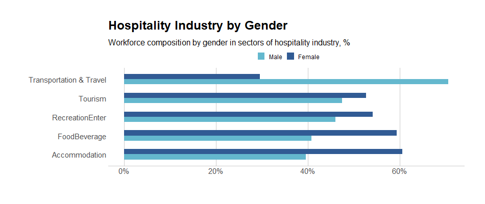
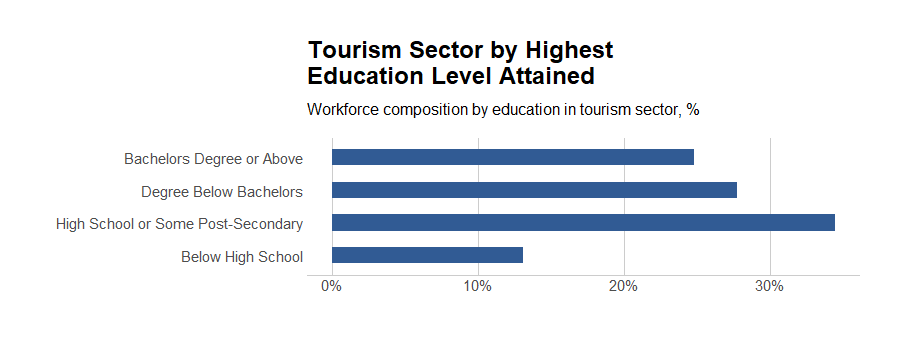
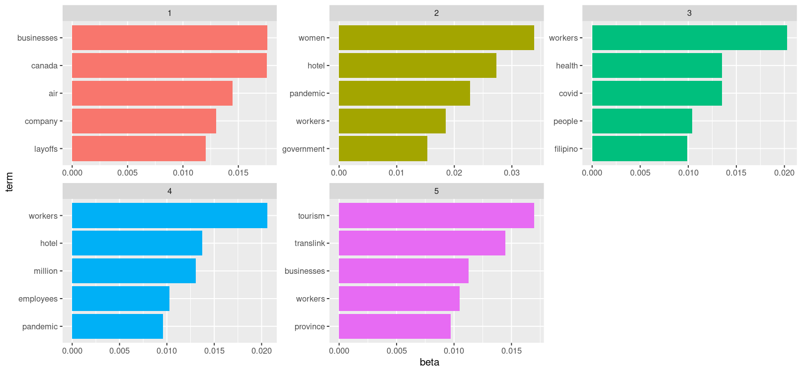

Prelude
How has the COVID-19 pandemic impacted employment across genders within BCs service industry?
We seek to contribute to this discussion in the following ways:

Ralph Guillermo, Mathias Gausachs, Lesley Urgel, Lovely Ranges
Simon Fraser University, CityStudio, City of Vancouver
We seek to contribute to this discussion in the following ways:
The main research question that has guided this project is, “How has the COVID-19 pandemic impacted employment across genders within BCs service industry?” Factors like employment status, gender, and impact of COVID-19 regarding changes to employment status were variables of interests. Sub-groups encompassing each factor included men and women under gender and sub-sectors of the service industry like hospitality, travel, tourism, and accommodation. Research began through a literature review to explore the current conditions of employment, as well as various impacts on the service industry. On a global level, we found some key findings related to employment loss. In the UK and Australia, low-income workers were more likely to experience job loss than high-income workers, while the U.S. reported that unemployment among low-income workers presented difficulties in becoming re-employed, unlike high-income workers whose jobs were quickly revitalized and maintained in the job market (Stantcheva, 2022). The long-effects of the pandemic also surfaced, such as prolonged unemployment, difficulties in finding a new job, more childcare with schools closed down, and mental health crises. In terms of the labor market, there were demands for high-skilled labor and a supply of low-skilled labor (Stantcheva, 2022). The transition to remote learning and work excludes low-income workers who are not able to afford certain technologies required in these jobs such as a computer, and stable high-speed internet.
Then, further research addressed the conditions of the service industry on a national level, where findings on gender inequities in the service industry across Canada were presented. Although the nation underwent a recession, a new term titled “she-cession” represented the discovery that unemployment rates largely affected Canadian women. As the service industry employs more women than men, the “she-cession” reflects the low employment rates for women across the country (Baylis et al., 2021). Other data findings on national employment rates within the hospitality industry revealed major job loss in various sectors of the service industry, such as tourism, food and beverages, and accommodation (Baylis et al., 2021; RBC Economics, 2020). While gender differences in national rates of employment from the report could not be found, unemployment in the service industry was prevalent at the beginning of the COVID-19 pandemic, as well as within the second quarter of 2021 (Statistics Canada, 2021). This could be reflected in the report’s findings that businesses in the tourism sector had to shut down and lay off employees to follow government mandates regarding the closure of ‘non-essential’ businesses” (Baylis et at., 2021). While collecting existing data on international, national, and provincial unemployment rates – whether it reveals gender inequities or unemployment rates in the service industry – other contributions to literature that expand on the research question.
A contribution to the research study was adding new subgroups like race and ethnicity to research the unemployment rates of women of color in the BC service industry. Rather than exclusively analyze the impacts of all Canadian women in the services sector, it is important to acknowledge intersectional identities that have been largely impacted by the COVID-19 pandemic. Racialized women, such as Black, Indigenous, and women of color, may be over-represented in statistical findings of BC unemployment rates, which have mostly generalized women’s representation in the service industry (Unequal Women, 2021). However, when gathering datasets, these were not available, as most data was generalized to gender and age group. Another contribution is the inclusion of recent, updated, and more accurate datasets, many of which released their findings in late 2021. This had benefits to the research study as federal and provincial data reports can be analyzed and visualized accordingly. However, these recent findings are mainly from Statistics Canada, who do not have their datasets available to the public. Lastly, further interest included researching unemployment rates that reflect layoffs or resignations in the service industry through a comparison analysis. This aided in defining and determining the parameters of ‘unemployment’ that includes employee satisfaction, alternative career opportunities, and changes in the labor market. A recent phenomenon that has stemmed from COVID-19 has been the re-evaluation of work which has led some people to quit their jobs (RBC Economics, 2020). This has been called “the Great Resignation” due to the supposed large number of turnovers. It was mostly reported in the US, as millions of people quit their jobs, but discussions of the “Great Resignation” have recently spread to Canada. It is important to analyze these presumed trends, as they may establish new turnover tendencies within the labor force.
Moving on to our datasets, three different categories were collected: populations within the service industry of British Columbia, Canada Emergency Response Benefit (CERB) candidates and applicants, and a dataset of thirty news articles regarding the service industry in British Columbia for topic modeling. From the BC Tourism and Hospitality Labor Market Information Research Project, a government-funded project available on the go2HR website, the dataset contained information on BC’s service industry (go2HR, 2021; Tourism HR Canada, 2021). This dataset is composed of variables like gender, age groups, and different compositions within the subsectors of the industry. It was also a time series dataset, as numbers were calculated throughout 2017 to late 2021 from the number of employees in different subsectors and the amount of workers according to full-time or part-time status. Moreover, a CERB dataset specifically on BC residents was retrieved from a City of Vancouver representative. The CERB dataset included information on those entitled to receive CERB and those who actually received the CERB (Community Data Program, 2021). This was also a time series dataset ranging from March 15, 2020 all the way to September 20, 2020. As for the service industry dataset, thirty news articles written throughout the pandemic (March 2020, to early 2022) were gathered across different media outlets, such as CBC, Global News, CTV News, BC Business, The Tyee, Greater Vancouver Board of Trade press, Briar Patch Magazine, and other digital news websited. It consisted of over 19,093 words for analysis.
For this research project, gender disparities were documented to emerge or worsen from COVID-19, in which these changes were explored and quantified in terms of differences in labor participation, CERB collection rates, and exit rates from the labor force. Firstly, why consider COVID-19 as a contributor to a gendered impact on the labor market? Perhaps the strongest determinants are other factors like age or education. However, in recessions, men are typically more exposed to business cycle volatility. Usually, when faced with labor demand shocks, they lose more jobs and men’s unemployment rises more than women’s. One main reason states that men are typically over-represented in industries and sectors that are highly cyclical such as construction or transportation but women are over-represented in service occupations and industries. We can see on the gender breakdown graph that men dominate the Transportation and Travel sector (21% above the industry average) while women are more represented in every other sector. The accommodation sector has the greatest number of female workers (60% female versus 40% male) and as we will see later, mainly consisting of older age groups.

A factor that is of interest – the distribution of age – potentially interacts with gender differences in employment. The workforce composition by age in sectors of the hospitality industry is visualized. The distribution of age was divided into age brackets with 9 years of difference, with the darkest shade as the youngest age bracket up to the lightest shade which is 65 years or above. As a reminder, COVID-19 was not a typical recession in the sense that the service industry was disproportionately affected within the economy. The service industry involves sectors with a higher than average risk because of the high degree of contact between the workers and the consumers. Government legislation, in response to the pandemic, largely concentrated on impacts within the hospitality industry.
From the stacked bar chart for age, the transportation and travel sub-sector are mainly workers who are 35 to 54 years of age. Tourism has a high concentration of 15-34 year olds while recreation and entertainment is fairly even compared to the other sectors. The food and beverage industry is disproportionately represented by those who are 15-24 and clearly the younger age groups are more populated in this sector. The accommodation sector has the highest concentration of 55-64 year olds and a sizable portion of those who are 65+ years old. This sector has the highest makeup of senior workers compared to others.

To accurately track any changes to the service industry from before and during the pandemic, the labour market must be observed with a retrospective lens. In pre-pandemic 2019, the number of employees in the service industry remained relatively stable with a mean of 139,250 employed. In 2020, the mean number of employees for BC’s service industry was only 113,967, a decrease of 18.5%. As an interpretation of the data, only inferences of variable relationships can be observed, rather than conclusively make causal statements.
The vertical lines on the graph indicate key points throughout 2020, such as BC legislation and World Health Organization’s announcement of the COVID-19 outbreak as an international public health emergency. The vertical lines indicate the relationship between the number of service employees in BC and the pandemic. A sharp decline in employees began in January of 2020, around the same time the World Health Organization (WHO) announced COVID-19 as a pandemic. In March 2020, the province declared a state of emergency, which contributed to a decrease in the number of employees bottoming in April 2020. Furthermore, the impact of provincial legislation was shown in May 2020, when the B.C. government began phase 2 of the restart plan. There is a noticeable upsurge in the number of employees in the service industry. With phase 3 of the restart plan to open up the province and the highly impacted hospitality business, employment rates became relative stable, starting around June to July 2020.
Specifically, tracking changes in the graph from the initial drop in February - where the shutdowns begin, to the lowest point in April 2020, certain sectors have suffered the most from the shutdowns. The accommodation sector witnessed a 59.3% decrease in employment, 12.4% higher than the total industry average. This is no surprise, since there were heavy restrictions on transportation, travel and gatherings, resulting in a decrease in market activity within the accommodation sector, due to the general public being advised to stay home. The food and beverage sector also suffered a 53.7% decrease in employment, 6.83 % above the industry average. Bars, nightclubs, and all dine-in establishments were ordered to be closed, only allowing for take-out and delivery options. With businesses lacking the need to maintain a large wait staff, the most cost-effective option would be to layoff workers and rehire them when needed. Recreation and Entertainment remained the least impacted among all the other sectors with only a 32.42% decrease in employment. Perhaps evolving technology has helped mitigate the impacts. The most impactful restrictions on this sector were the bans on indoor and outdoor sporting events. Sadly, the Vancouver Aquarium was among the many businesses that were forced to close due to loss of profits during the pandemic. In terms of regional impacts, the Lower Mainland experienced major impacts, while other regions remained relatively stable. Except for the Accommodation sector - where Thompson Okanagan & the Kootenays experienced a 50% decrease in employment, Vancouver Island/Coast saw a 62.86% decrease, and the Lower Mainland had a 74.47% decrease. Older women were among the most impacted groups in this sector, as they are the most dominant age group. Overall, women dominate 60% of the Accommodation sector across all regions.
When discussing sharp decreases in employment within the province, it should be acknowledged that forms of government intervention that supplement income for laid off employees warrants assessment. Specific data from the provincial government gathered information on the Canada Emergency Response Benefits (CERB). Based on datasets provided by the City of Vancouver from both the Community Data Program and Statistics Canada, information on BC residents who were eligible for CERB, as well as those who applied and received it, was collected and analyzed. Data was only available for smaller geographies of British Columbia, as a synthetic estimate for the province was generated by a representative from the city who provided the datasets.
Data on CERB recipients and those eligible to receive it across all dates ranged from March 15th to September 20th. The data includes a breakdown of age into age groups of 9 years and their respective sums and percentages. The different colors indicate various age groups, with the age group 25-34 being the most eligible to receive the financial benefit. As the age groups get older (green, blue, to pink which are ages 65 and over), they are less eligible to receive it. Perhaps numbers are lower for those who have retired already or work a lot less which makes them ineligible. Next, the graph indicates the number of workers who actually received CERB. Interestingly, the age group 25-34 had the most people who were eligible to receive CERB, while BC residents ages 15-24 applied the most and received CERB. Notably, the age group 15-24 makes up the majority of some of the service industry subsectors, meaning they were largely affected by the lockdown. The increase of CERB recipients corresponds to the large drop in employees of the service sector, as well. From June 2020 onwards, the CERB recipients are lower. A potential interpretation would be indicating that employment has improved for young people to a certain extent.
This finding is of interest because it was assumed that out of those eligible, most would have taken the opportunity and applied for CERB. Among all age groups, there was a steady decline in terms of receiving the CERB, an exception being the 15-24 age group, who was over-represented in terms of the average recipients of CERB. It is possible that some technological barriers prevented eligibility for older age groups. For example, individuals had to visit the government website to fill out a checklist to find their eligibility, which was not notified through email or text message. Additionally, perhaps those older than 25 obtained jobs faster with more experience, as well as attained higher education levels, making them better job candidates.
A comparison was made between those entitled to CERB, and individuals who actually received it. Firstly, the box plot on age distributions displays those who are entitled to CERB. The means of entitlement for CERB was evenly distributed, except for those that are 65 and over (as they are retired) and those that are 25 to 34 who have a slightly elevated mean. Below is the distribution of those who actually applied and received the CERB. The means are much lower for each age group and a steady decline is observed as age increases.
As independent variables on their impacts in the service industry – which is the outcome variable – a two-way ANOVA was applied to determine the main effects of gender and age on the number of CERB recipients. Under a normality assumption of residual plots, the average number of CERB recipients between men and women was not statistically significant. In other words, the distribution of residuals between genders was symmetric. Therefore, there was evidence of an interaction effect. Regarding rates of labor force participation between genders within the service industry in 2020, a linear regression analysis was conducted to determine the average number of CERB recipients monthly. The findings suggest that the interaction effect between the average number of recipients by gender did not have a significant effect on the participation rate.
When fitting the model, the variation of gender and age in the CERB count was calculated to be 67.6%. Another finding showed that the slope difference was not statistically significant between gender (F=2.8773).
After analyzing datasets that determined age and gender differences among employees in the service industry, it was important to examine the most important topics discussed or mentioned throughout the pandemic. Under topic modeling, which identifies frequently stated words in collected documents, prevalent topics were selected based on the frequency of words from each news article. However, the collection of thirty news articles for analysis is sparse data; the research conducted had to maintain caution on its interpretation. For example, Google search results will display the most popular articles that would be covered, meaning these articles attracted the most clicks for media outlets.
In the following bar graph, five topics with five words were chosen based on their relevance among the collected news articles. Topic modeling operates to identify the types of topics indicated from the most common words. The ‘beta’ label on the x-axis refers to calculating probabilities of generated terms from a given topic. In other words, it provides word distribution for analyzed documents. Topic 1 and Topic 2 emphasize employees and businesses facing major employee layoffs in the hotel sector. Some news articles collected on the hotel industry focused on the impact of businesses during the COVID-19 pandemic, as many service workers were laid off en masse due to lockdowns and restrictions being mandated (The Tyee, 2020; CBC News, 2020). As more people stayed home, these hotels were mostly being utilized as ‘quarantine’ rooms for those arriving from other countries, and a lot less for use of leisure with the ban on international travel, and less use for business. Topic 3 focused on the transportation sector, particularly Translink, who laid off employees due to reduced services, and detected its lowest ridership yet throughout the lockdown amid the pandemic. It also mentions Air Canada, and the word ‘routes’, which may indicate the overall impact on the transportation and travel industry such as banned domestic and international travel. On the other hand, Topic 4 emphasizes the hotel sector in a different perspective than topic 1 and 2. It may indicate that women in the service industry suffered a huge impact from the pandemic. Perhaps the word ‘government’ indicates a call to action from the workers to increase government support for the industry. Finally, Topic 5 seems to address the issue of racialized workers being laid off, as a national issue, rather than a local within the province of BC. The words ‘health’, and ‘filipino’ are used. The articles may have less to do with the service industry, but more so how migrant and healthcare workers were largely at risk in the pandemic when having jobs that involved being in the frontline, or with people having different levels of access to healthcare based on residency status (Briarpatch, 2021; CBC News, 2020).
Overall, the topic modeling of 30 news articles on employee layoffs in the service industry throughout the pandemic largely focused on covering the hotel, transit, and tourism sectors, while identifying women and racialized workers as the main populations most impacted by employee layoffs, both in Vancouver and across Canada. These findings support preliminary research and literature review on the impact of employment across genders, since we can see that women, who are over-represented in the service industry, are reported as workers who have experienced job loss from businesses laying off employees, entire service sectors losing revenue, and provincial government mandates requiring businesses to close during lockdown. Some limitations to our findings include the small sample size of news articles, as well as collecting news articles for certain service sectors, but not others. For instance, articles on the retail sector were not collected, despite also facing employee layoffs during the pandemic. While these limitations prevent us from determining a wider scope and detail on the amount of news coverage surrounding the service industry, we wanted to present some prevalent topics that give us an idea of which populations were affected, which words were used to indicate certain topics across news articles, and how these findings shape discussions around employee layoffs exclusive to the BC service industry. Essentially, each topic is indicative of the most reported topics throughout the pandemic. It visualizes affected sectors and populations that media outlets note should be prioritized for better support systems post-pandemic.
Much of the data we collected for analysis could only be evaluated and interpreted for certain variables. Since we could not access more datasets from the provincial government centering around age and gender differences in the BC service industry, our findings are rather broad and inconclusive regarding employment rates and CERB data. It is more of an observation of the service industry as a whole, but we were able to discover some significant findings, such as low recipients of CERB for eligible BC residents and disproportionate differences between genders in the travel and transportation sub-sector. For our next steps, there may be better opportunities to collect more individualized, specific datasets available to the public, once more time has passed in a post-pandemic landscape. Since we have analyzed preliminary datasets on employment rates across genders in the service industry, as well as determined notable topics related to employee layoffs amid the pandemic, an expansion of the project would focus on fulfilling the following research goals:
Regarding the limitations of article choices on topic modelling, media representation of key issues like employment in the service industry may not reflect the actual industry trends occurring. For instance, terms used in articles such as employers stating ‘labor shortages’ to hire new workers does not address a stabilized labor market in the service industry in 2021. There may be more candidates applying for jobs in the service industry, but not receiving a response because a ‘labor shortage’ is nonexistent. The actual issue could be a shortage of cheap labor, which stems from poor working conditions, low wages, employee mistreatment, reduced benefits, and so on. A lack of improved working conditions or no increase in minimum wage, despite growing wealth inequalities and higher costs for our standard of living, could be a factor in reducing demand for service jobs. Issues with the service industry may not frequently be reported in the media, due to their representation of employers as business owners who are continuously looking to hire.
Vancouver, BC